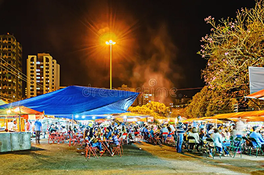
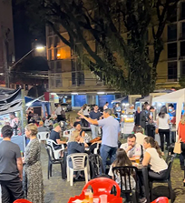
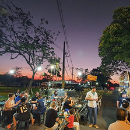
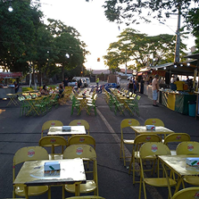

A Origem da Feira Da Lua na Cidade de Londrina
A Feira da Lua nasceu no início dos anos 1990 e, institucionalizada por meio de leis municipais, tornou-se patrimônio cultural de Londrina. Com edições noturnas espalhadas por diferentes bairros, ela já integrou gastronomia, cultura, música, comércio e identidade, transformando-se num símbolo de convivência e celebração comunitária – uma verdadeira “lua” carioca cheia de sabores e encontros.
Que tal revisitar ou conhecer uma edição? Londrina brilha mais à noite com comida, música e gente reunida sob a lua.



